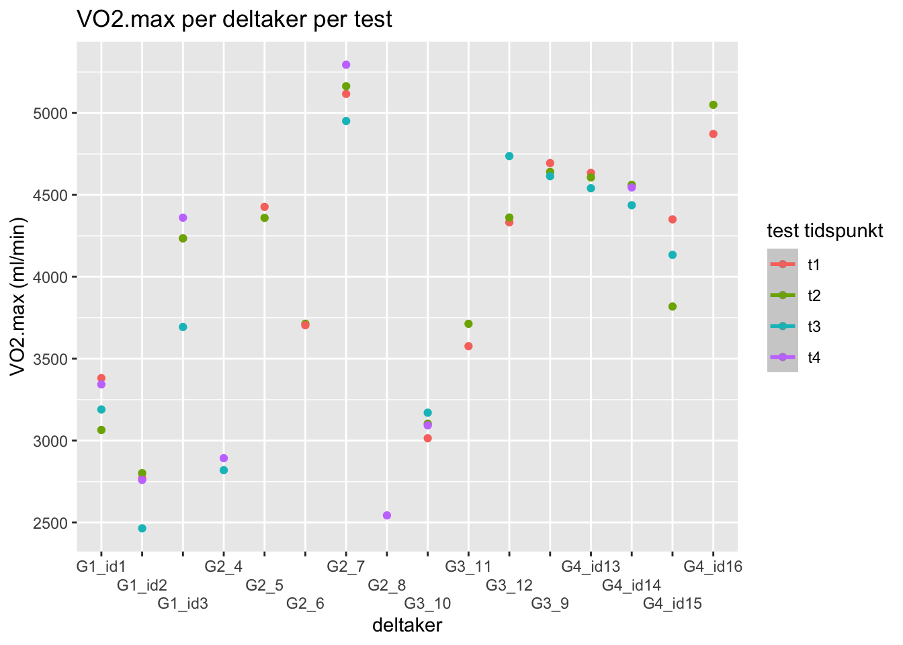

Oppgave 1
Reliabilitet og verktøy for å reprodusere data
Hensikten med denne rapporten er å presentere estimater for reliabilitet av data samlet i fysiologisk testlab ved Høgskolen i Innlandet. Vi har gjennomført VO2max tester på sykkel der 16 deltakere har gjennomført 2 eller 4 tester i løpet av tre uker. De to første testene ble gjennomført med ca. 24 timers mellomrom i uke en. De to siste testene ble gjennomført med ca. 48 timers mellomrom i uke tre. Vi har brukt Rstudio for å analysere dataen og få svar på om våre tester er reliable.
Standardisering før test
Deltakerne ble instruert om å ikke trene dagen før test. Næringsinntaket, her også koffein og væske, de to siste måltidene skulle være likt før hver test. Deltakerne ble også bedt om å tilstrebe lik døgnrytme. Alle deltakerne hadde samme testtidspunkt hver testdag (Halperin, Pyne, and Martin 2015).
Test protokoll for VO2max test
Test protokoll for VO2maks testingen forteller hvordan testene ble gjennomført. Et plotteark i exel er klargjort av testleder før man kommer til labben ved å fylle inn informasjon man vet om deltaker på forhånd. I labb forbereder testleder utstyr og maskiner på en standardisert måte hver test. Det første som gjøres i labben er at testleder tar på seg labfrakk som henger i labben, og sørger for at biosen(laktatmåler) er skrudd på og se om kalibreringen måler 12mmol/la. Ved “kalibrerings error” byttes standardveske. Vyntusen skal kalibreres av gasskalibrering og volum kalibrering mens gassbeholderen er åpen og trippel står i vyntus. Mens vyntuskalibreringene pågår setter testleder sammen munnstykke med neseklype og tar med slange til å puste gjennom som festes til miksekammer og sykkel. For å være klar til test må gasskalibreringen på vyntus være innenfor 2,0 diff og volumkalibreringen innenfor 0,2 diff. Deretter hentes utstyret for å måle laktat klart, og sykkelen kalibreres på lodeprogrammet etter at krankarmen er plassert rett opp. Man sjekker også at krankarmen er 172,5mm lang og riktig pedaltype for utøveren. Da er det klart for at utøver kommer i labben for å måle vekt og stille inn sykkelen for sin kropp. Deltakerprofil må lages om det ikke allerede eksisterer i både lodeprogram og vyntus. Deltakerprofil inneholder navn og id: “idr4000_h24_g3_id(x)”, fødselsdato, kjønn, høyde og vekt. Sykkelen stilles slik deltakeren vil ha det samt at det ser bra ut ifølge testleder. Sykkelinstillingene lagres i lodeprogrammet. Så starter deltakeren en oppvarmingsprotokoll på 5min sykling med progressiv borg fra 10-13. Testleder setter på vifte mot deltakeren og informerer om at testen kommer til å foregå trappetrinsvis ved økning i watt per min (20w for damer og 25w for menn) og at målet skal være å sykle til det ikke går lenger, at det blir målinger hvert 30sek og at man skal sitte gjennom hele testen, og forklarer borg skala. Mens deltakeren varmer opp gjør testleder vyntusen klar til test ved å dobbeltsjekke pulsbeltettilkobling, at innstillingene står på 30sek målinger og medium munnstykke, gjennomføre zeroing, flytte trippel v til miksekammeret og skru igjen gassbeholderen. Oppvarming er ferdig og testen startes i vyntus. Testen starter for deltaker ved å starte VO2maks protokollen i lodeprogrammet samt en tidtakerklokke etter 1min er gått i vyntus. Gjennom testen informerer testleder om målinger og økninger samt motiverer når det blir tungt for deltaker. Testen stopper ved at deltaker gir seg eller RPM går under 60. Testleder noterer ned makspuls, sluttid, sluttwatt og borgskår ved endt test. Laktat tas i fingeren 1min etter endt test ved å tørke, stikke, tørke første bloddråpe og fylle laktatrør. Testleder passer på at deltaker har det bra. Laktat plottes i skjema. Deltakeren er da ferdig og testleder avslutter test i vyntus og lodeprogrammet som lagres. Vyntus filen lagres over på minnepenn før den lagres i onedrive på lab pc. Sykkelen, munnstykket, slangen og pulsbeltet vaskes. Vifta settes til å tørke fukt i miksekammeret. Plotteskjema fylles med verdier fra Vyntus og lagres.
Figur 1
Figur 1 viser det absolutte maksimale oksygenopptaket til hver enkelt deltaker, sammenlignet med alle testene som ble gjennomført til alle deltakerne.
Tabell 1
| id | t1 | t2 | t3 | t4 |
|---|---|---|---|---|
| G1_id1 | 3381.5 | 3065.0 | 3190.0 | 3343.0 |
| G1_id2 | 2771.0 | 2801.5 | 2464.5 | 2760.0 |
| G1_id3 | 4234.5 | 4235.0 | 3693.5 | 4361.0 |
| G2_4 | NA | NA | 2819.5 | 2893.0 |
| G2_5 | 4427.0 | 4359.5 | NA | NA |
| G2_6 | 3704.5 | 3713.5 | NA | NA |
| G2_7 | 5116.5 | 5163.5 | 4951.0 | 5294.5 |
| G2_8 | NA | NA | NA | 2543.5 |
| G3_9 | 4694.0 | 4640.5 | 4614.0 | NA |
| G3_10 | 3014.5 | 3103.5 | 3170.5 | 3093.0 |
| G3_11 | 3576.5 | 3713.0 | NA | NA |
| G3_12 | 4332.5 | 4362.0 | 4737.0 | NA |
| G4_id13 | 4634.5 | 4606.5 | 4540.5 | NA |
| G4_id14 | 4556.5 | 4561.5 | 4437.0 | 4545.0 |
| G4_id15 | 4350.5 | 3818.5 | 4134.0 | NA |
| G4_id16 | 4872.0 | 5050.0 | NA | NA |
Tabell 1 viser det samme som “Figur 1”, men her kan man lettere se hvor mange tester hver enkelt deltaker har gjennomført og hvilket resultat som hører til hvilken test.
Beregning av standardfeil mellom test 1 og test 2
| mean | sd | te | cv |
|---|---|---|---|
| 4,102.1 | 183.5 | 129.8 | 3.2 |
Beregning av standardfeil mellom test 3 og test 4
| mean | sd | te | cv |
|---|---|---|---|
| 4,102.1 | 240.9 | 170.3 | 4.2 |
Resultat
Vi kalkulerte at variasjonskoeffisienten (CV) for test 1 og test 2 ble 3.16%. I følge Dr. Will G. Hopkins indikerer en variasjonskoeffisient (CV) på under 5% god reliabilitet (Hopkins 2000). Det vil si at resultatene for test 1 og test 2 har relativt lav variabilitet og bør betraktes som reliable. For test 3 og test 4 kalkulerte vi at variasjonskoeffisienten (CV) ble 4.2%. Det vil si at også resultatene for test 3 og test 4 kan betraktes som reliable, men har mer variabilitet enn resultatene fra test 1 og test 2 da variasjonskoeffisienten er noe høyere.
References
Halperin, Israel, David B. Pyne, and David T. Martin. 2015. “Threats to Internal Validity in Exercise Science: A Review of Overlooked Confounding Variables.” International Journal of Sports Physiology and Performance 10 (7): 823–29. https://doi.org/10.1123/ijspp.2014-0566.
Hopkins, Will G. 2000. “Measures of Reliability in Sports Medicine and Science.” Sports Medicine 30 (1): 1–15. https://doi.org/10.2165/00007256-200030010-00001.